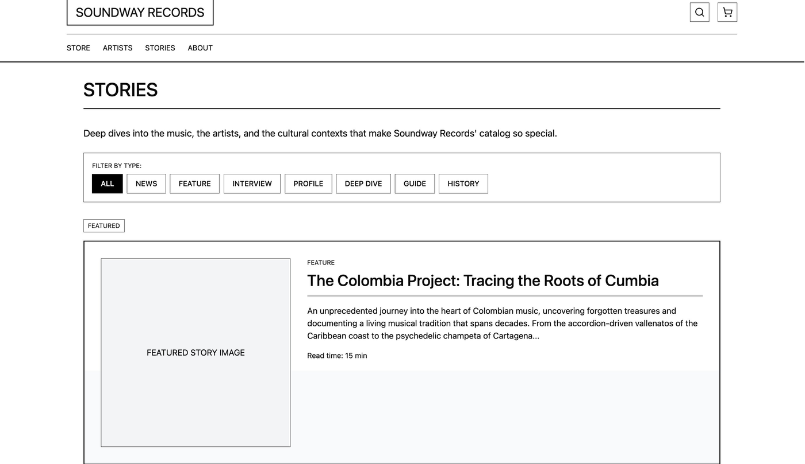
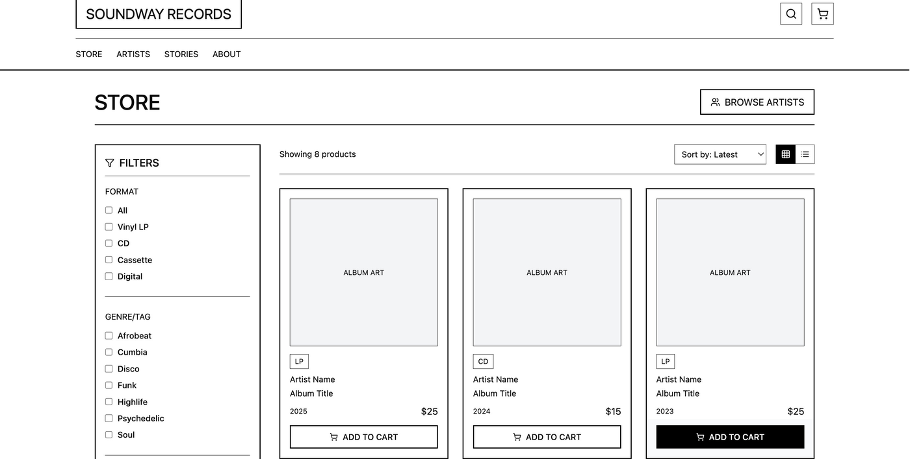
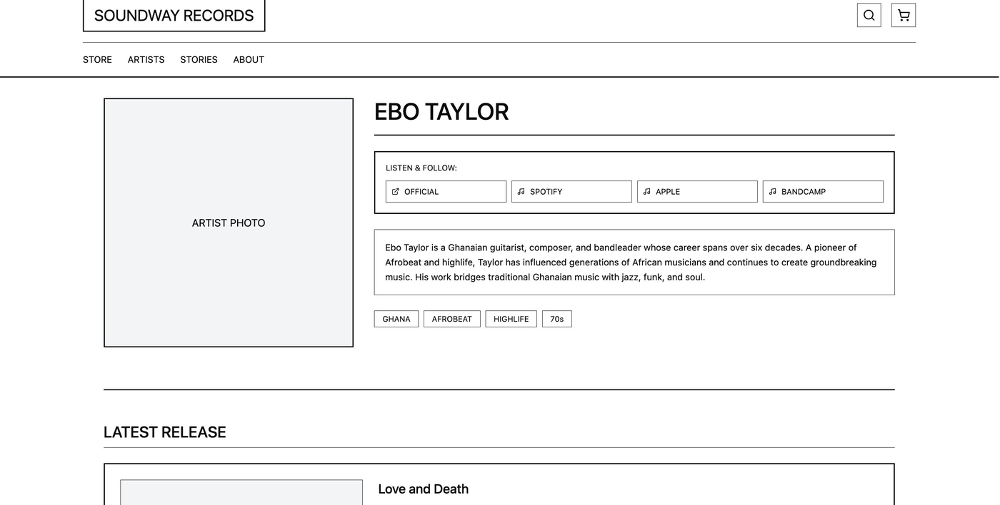
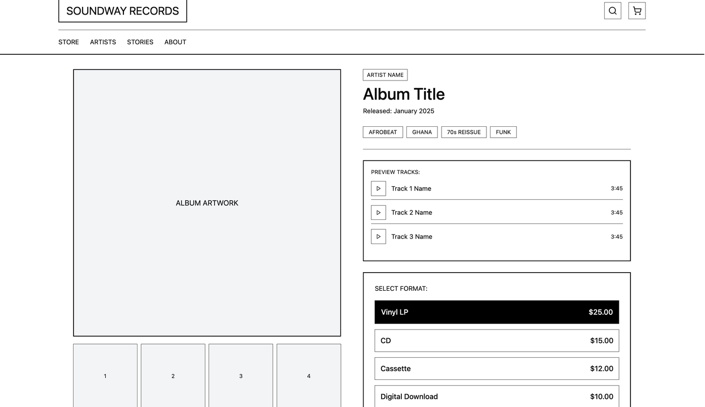
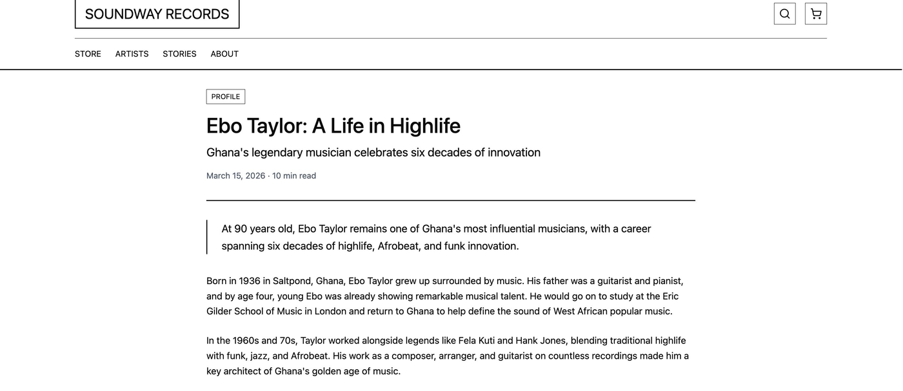
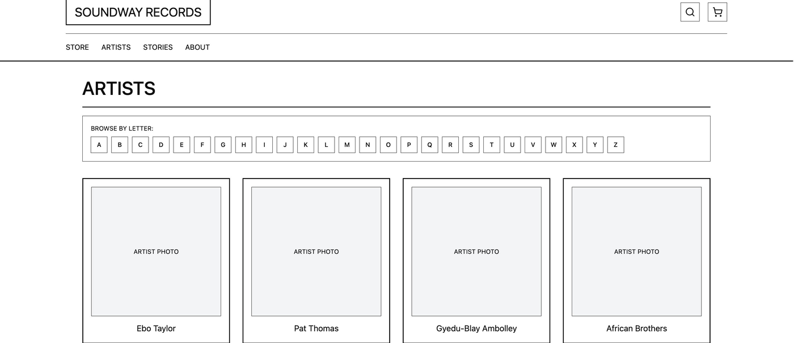
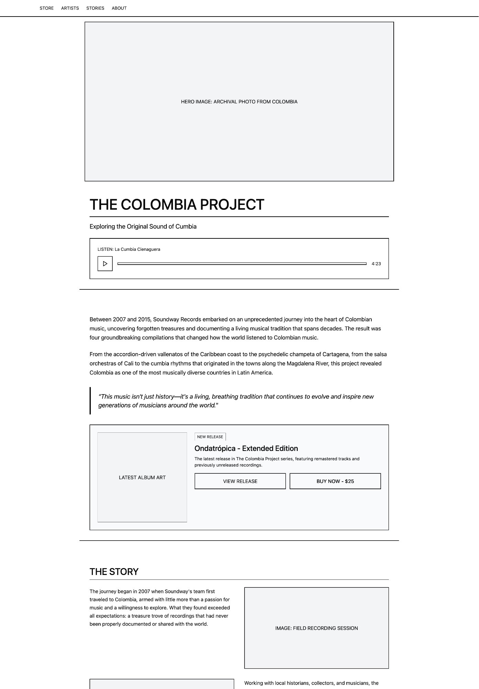

Closing the gap between identity and perception
An independent music label with a rich archival catalogue and ambitious new releases was losing ground to the algorithms. I led discovery to understand why, and what to do about it.
Bottom line: A discovery strategy and brand direction connecting streaming, retail, and editorial, drawn from 11 listener interviews.
A label with two different personalities.
Soundway has spent decades unearthing forgotten West African, Latin American and Southeast Asian music, releasing ambitious new work alongside it.
But internally the team felt something was off: their archival identity dominated outside perception, while new releases struggled to cut through. No one had investigated the gap systematically. That's where this started.
“We know who we are. But when we look at how people talk about us online, it's like they only see half of what we do.”
, Soundway stakeholder, internal interview
Talking to everyone who touches the music.
To understand the gap I needed perspectives from across the ecosystem, not just fans, but the people who carry and sell physical music, and the platforms where discovery happens. 11 in-depth interviews across four groups, plus a retail field visit.
“Soundway's archival stuff practically sells itself, but their new releases, I don't always know how to pitch them.”
“Incredible credibility in certain circles. But if you're not already in them, there's no bridge for a new listener.”
“I found them through a TikTok sample. The website felt like a collector thing, not for me.”
“We want to be known for discovery in both directions, lost gems and tomorrow's artists.”

Six patterns across every conversation.
Despite interviewing very different groups, the same themes surfaced again and again. The gap wasn't a mystery, it was systematic.
Every external participant associated Soundway primarily with reissues. New releases lived in a perceptual blind spot, often undiscovered even by engaged fans.
Website, social and streaming were built around the archival aesthetic. New releases were present but felt like guests rather than headliners.
Shops stocked reissues reliably, the story is clear. For new releases, buyers had no comparable story, so they under-ordered and under-displayed.
Listeners arrived via samples, TikTok and playlists, then found an aesthetic aimed at a different audience, and disengaged.
Curators respected Soundway's taste but weren't in the loop on new releases. Outreach was reactive, at release, not before.
Stakeholders articulated a clear dual mandate, lost gems AND tomorrow's artists. The website told only half the story.

Two aesthetics sharing one face.
I audited the visual language across website, social, packaging and press. The pattern was consistent: archival releases had a defined, compelling aesthetic, new releases were expressed through the same lens, creating friction.
Warm, sepia photography; worn textures; editorial liner notes; collector vocabulary. Strength: instantly communicates authority and care.
The same archival treatment applied uniformly; new artists shown in “catalogue” format with no distinct signal. Gap: new releases feel like additions to an archive, not events.





Five things to do differently.
Sequenced by impact and effort, designed to address the gap without dismantling what's working. Not a rebrand; giving the full picture of Soundway room to exist.
A distinct visual register for new releases
A complementary system, not a rebrand: bolder type, higher-contrast colour, photography that reads as alive. Two systems coexist, each honest to its content.
Rebuild the website around both halves of the catalogue
Surface new releases and the archive equally, with pathways for first-time listeners and long-term collectors, and clear wayfinding between the two worlds.
Give retail buyers a narrative toolkit
Simple, shareable briefs for each new release, who, why, and what connects it to the label's story, so shop staff have something to say.
Build tastemaker relationships before release
Shift from transactional outreach to ongoing relationship, early listens and context, creating advocates rather than one-time press slots.
A landing experience for streaming-native listeners
Short, sensory, mobile-first entry points that match the energy that brought Gen Z there, without alienating existing fans.
What this research unlocked.
The research delivered a clear strategic picture where there had been only a felt sense of misalignment. The report and wireframes became the foundation for the label's upcoming website redesign.
“This research gave us language for something we'd been feeling but couldn't articulate. The dual-identity framing changed how we're approaching the next 12 months.”
, Soundway stakeholder, project close
A live, navigable prototype of the redesigned site, 10 pages, audio previews, filters, cart and dark mode, is linked from the sidebar.